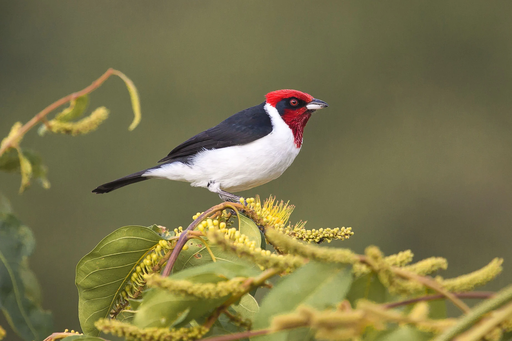
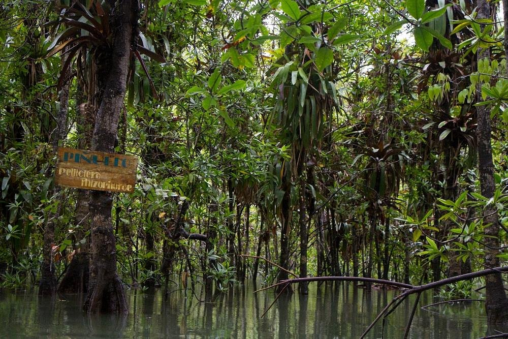
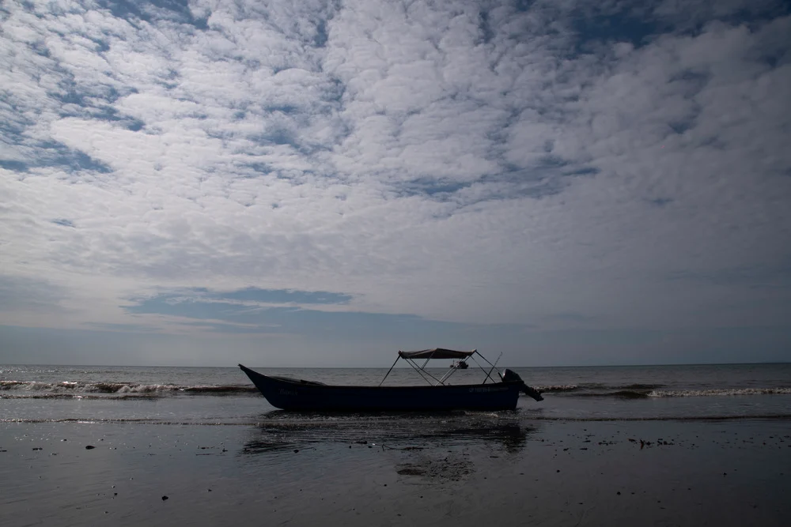

Aves
La columbina colorada, la oropéndola chocoana, el piquero nazca y el ibis blanco, no son los títulos de libros costumbristas,
ni los nombres de piezas musicales vallenatas o cumbiamberas; sin embargo, estos nombres tienen mucho que ver con la poesía
de nuestra naturaleza y definitivamente con la música. Estos nombres corresponden a cuatro de los más de 1.900 tipos de aves
que se encuentran en Colombia, un país ideal para el avistamiento de aves y que no querrás dejar de ver y escuchar directamente
en su hábitat natural.

Manglares
Manglares, árboles y cascadas conforman el paisaje que se aprecia cuando se percibe el contraste entre la frondosidad
de la selva y la serenidad de las aguas del Pacífico, sobre la arena oscura de la ensenada del Parque Nacional Natural
Utría y las playas del Golfo de Tribugá. En el Chocó también es posible practicar snorkel, bucear, montar en kayak y
hacer caminatas.

¿Cómo hacer avistamiento de aves?
Necesitarás unos binoculares, una cámara de fotografía y un cuaderno de campo donde podrás tomar nota y dibujar las
diferentes características de las aves que te sorprenderán desde muy temprano en la madrugada. Esta actividad requiere
de mucho silencio por lo cual se garantiza mucha tranquilidad al término de la jornada.

Turismo en el chocó
Si eres de aquellos que disfrutan de entornos naturales que mantienen su pureza y su belleza intactas, el Chocó es,
sin duda, un destino predilecto para ti.
Se trata de un departamento único por varios motivos, pues ningún otro tiene frontera con Panamá, ni tiene tanta
herencia africana, ni es bañado por dos océanos, el Pacífico y el Caribe.
Esto hace del Chocó un lugar que mezcla selvas abundantes, ríos hermosos y playas magníficas, lo que actualmente
es un rotundo éxito entre turistas colombianos y extranjeros.
Otra característica que te encantará del Chocó es su folclor musical, que tiene origen africano y que emplea
tambores para crear ritmos frenéticos, los cuales, todavía hoy, se escuchan y se bailan en la zona, como la chirimía.

Qué hacer en Chocó
La selva del Darién que se funde con la playa y llega hasta el mar es el telón de fondo de muchas experiencias que
se viven en el Chocó, departamento que te ofrece innumerables atractivos turísticos naturales y culturales.
Entre los principales lugares de interés, sobresalen la Cascada Sal de Frutas en Tutunendo y los parques nacionales
Utría, Katíos y Tatamá. Además, en el Chocó hay selvas y playas vírgenes en las que podrás apreciar la incesante biodiversidad tropical.
El departamento cuenta también con municipios de gran interés para el turismo. Quibdó, su capital, entraña toda la
magia del Pacífico colombiano. La ciudad, ubicada a orillas del río Atrato, cuenta con un malecón desde el cual se
disfruta de una magnífica puesta del sol. Desde el mismo lugar, puedes abordar pequeñas embarcaciones que te llevarán
a poblaciones cercanas donde podrás almorzar comida típica y bailar al ritmo de la marimba.
Otro interesante municipio es Sapzurro, un auténtico paraíso terrenal que tiene hermosas playas, senderos, cascadas y
termales.
Nuquí es otro tradicional pueblo chocoano rodeado de bellas playas que se encuentran bordeadas por la selva tropical.
En la zona, hay hoteles con cómodas cabañas frente al mar que ofrecen una vista incomparable.
También vale la pena visitar Capurganá, un destino ideal para el descanso y el contacto con la naturaleza. El principal
atractivo de Capurganá es que te permitirá desconectarte del bullicio urbano, pues en esta población no hay automóviles
ni motos. Los únicos medios de transporte son bicicletas y lanchas.
Ten en cuenta que todo el departamento cuenta con mar y ríos, así que la gastronomía tiene como base diferentes
variedades de pescado, que son un auténtico manjar cuando se acompañan de otras preparaciones típicas de la región,
como la sopa de queso, el arroz clavado, la mermelada de borojó, el postre de birimbí, el sancocho de mulata paseadora,
entre otros.